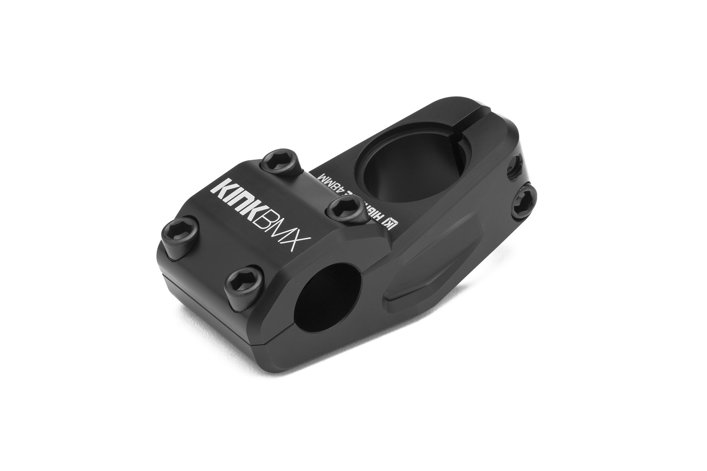
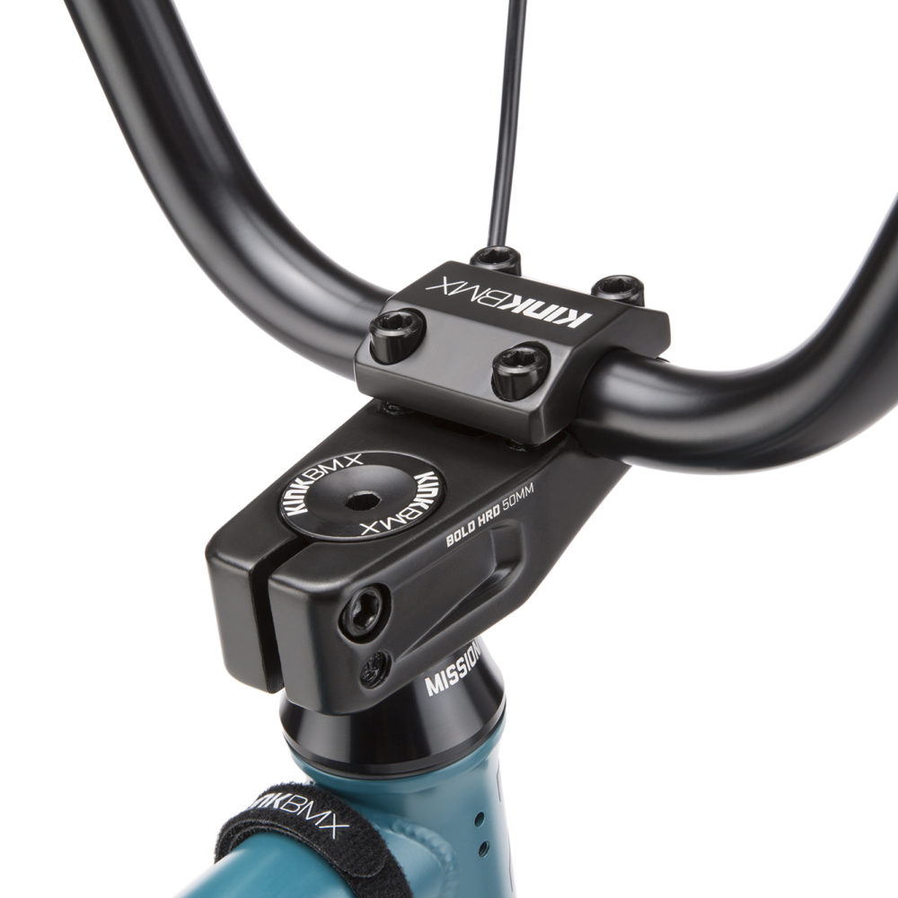
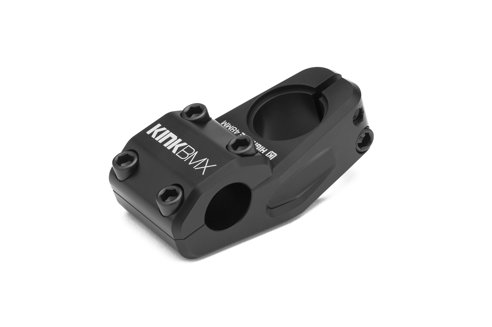
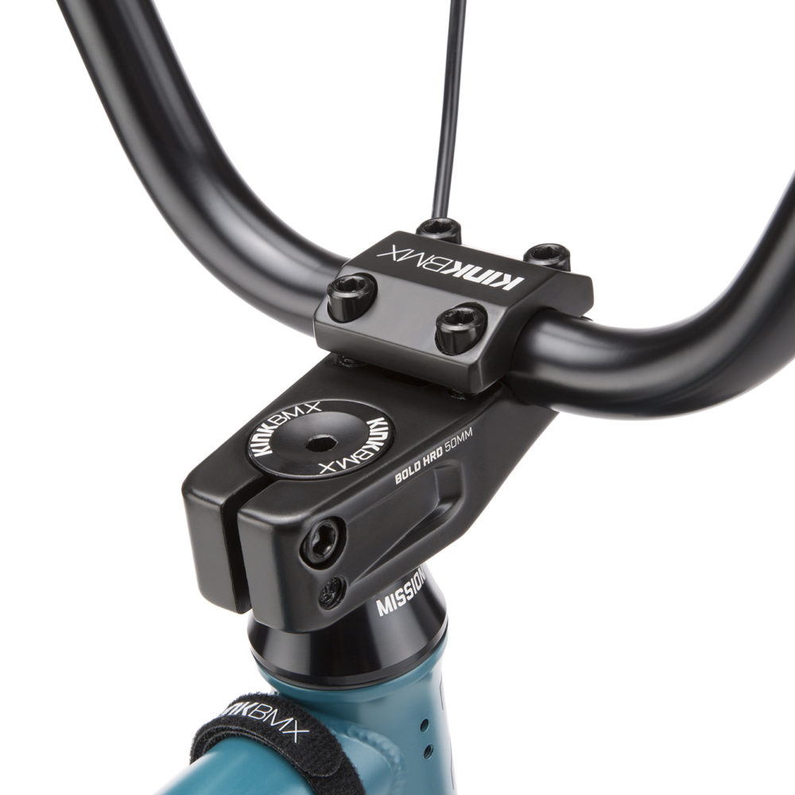

виконаний у благородному чорному кольрі з високоякісного алюмінію марки 6061-T6
 

| 1601грн. |
Характеристики й опис
| Виробник - KINK |
| Довжина - 48 мм. |
| Висота - 30 мм. |
| Вага - 274г |
| Призначення - BMX |
| Тип виготовлення - кований |
| Кріплення до штоку - 2-ма болтами |
| Кріплення до руля - 4-ма болтами |